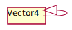

Class Vector4
Hierarchy-Diagram
{kind=link}
Legend
 class
class
Hierarchy
- Vector4
- Vector4
Index
Constructors
Properties
Methods
add
add
Constructors
constructor
Properties
height
height: number
Readonly is
is
w
w: number
width
width: number
x
x: number
y
y: number
z
z: number
Methods
add
add
add
add
apply
ceil
clamp
clamp
clone
copy
divide
dot
equals
floor
from
- from
Array(array: number[] | ArrayLike<number>, offset?: number): Vector4 -
Sets this vector's x, y, z and w value from the provided array or array-like.
Parameters
-
array: number[] | ArrayLike<number>
the source array or array-like.
-
Optionaloffset: number(optional) offset into the array. Default is 0.
Returns Vector4
-
from
get
length
length
lerp
lerp
manhattan
- manhattan
Length(): number -
Computes the Manhattan length of this vector.
see Taxicab Geometry
Returns number
max
min
multiply
multiply
negate
normalize
random
round
round
set
set
set
set
set
set
setW
setX
setY
setZ
sub
sub
sub
to
- to
Array(array?: number[], offset?: number): number[] -
Returns an array [x, y, z, w], or copies x, y, z and w into the provided array.
Returns
The created or provided array.
Parameters
-
Optionalarray: number[](optional) array to store the vector to. If this is not provided, a new array will be created.
-
Optionaloffset: number(optional) optional offset into the array.
Returns number[]
-
- to
Array(array?: Vector4Tuple, offset?: 0): Vector4Tuple -
Parameters
-
Optionalarray: Vector4Tuple -
Optionaloffset: 0
Returns Vector4Tuple
-
- to
Array(array: ArrayLike<number>, offset?: number): ArrayLike<number> -
Copies x, y, z and w into the provided array-like.
Returns
The provided array-like.
Parameters
-
array: ArrayLike<number>
array-like to store the vector to.
-
Optionaloffset: number(optional) optional offset into the array-like.
Returns ArrayLike<number>
-
Serializable THREE.js Vector4